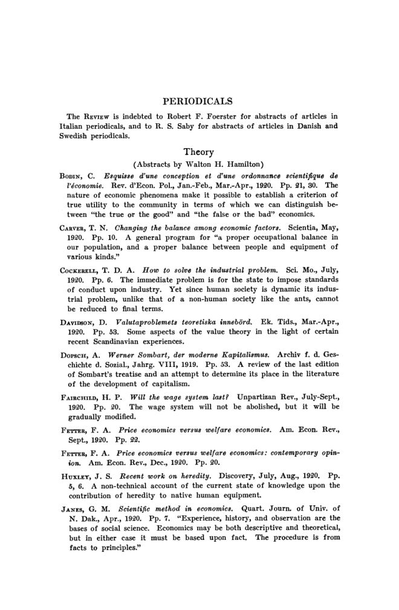

O crédito que não paga juros e o cartão dos mineiros de Butte
Leitura: 12 min
King mede o custo da expansão do crédito; Brissenden descreve o cartão exigido dos mineiros de Butte; Fetter, Arbuthnot e Fairchild discutem a economia dos preços, o dólar estável de Fisher e o imposto sobre empresas.


Durante meio século, desde a Guerra Civil, o governo dos Estados Unidos manteve em circulação US$ 346.681.016 em greenbacks, notas que ninguém pedia para resgatar. Se tivesse emitido títulos no mesmo valor, calcula Willford I. King no número de dezembro de 1920 da American Economic Review, teria pago mais de US$ 700 milhões de juros. A promessa de pagar à vista, conclui, é a forma mais barata de tomar emprestado, e os bancos aprenderam a imitá-la.
A edição fecha o volume de 1920 com dois artigos sobre moeda e crédito, dois sobre política pública e um sobre o próprio método da economia. Frank A. Fetter conclui seu estudo sobre a economia dos preços; King trata do crédito bancário; Paul F. Brissenden descreve o cartão de licença exigido dos mineiros de Butte; C. C. Arbuthnot critica o plano de Irving Fisher para estabilizar o dólar; e Fred Rogers Fairchild propõe refazer a tributação federal da renda e dos lucros.
O preço pode ser o centro da economia?
Frank A. Fetter (Princeton University) · “Price Economics Versus Welfare Economics: Contemporary Opinion” · pp. 719–737
É a segunda parte do estudo de Fetter; a primeira, no número de setembro de 1920, contou a origem da economia dos preços e os protestos contra ela até o fim do século XIX. Agora ele examina a opinião contemporânea. A pergunta é se o preço em dinheiro deve ser o centro da ciência econômica ou apenas um instrumento a serviço do estudo do bem-estar.
O primeiro alvo é Alfred Marshall, que Fetter vê dividido. Numa conferência de 1896 em Cambridge, Marshall pedia aos jovens economistas que se dedicassem ao bem-estar humano; nos Principles, faz do dinheiro a medida conveniente dos motivos humanos em larga escala, embora admita que o mesmo preço mede satisfações diferentes para pessoas diferentes. Para Fetter, a parte duradoura de sua obra é a qualitativa, voltada ao bem-estar.
O segundo alvo é Wesley C. Mitchell, que em 1915 sustentou que o uso do dinheiro devia estar no centro da teoria e que todas as escolas recentes caminhavam nessa direção. Fetter nega a tendência. Usa a classificação de Joseph Schumpeter dos economistas americanos em quatro grupos, de Columbia, Harvard, da Wharton School e de Wisconsin, para mostrar que quase todos têm inclinações sociais. E recusa, por si e por Fisher, o rótulo que Mitchell aplicou à escola psicológica americana: Davenport, diz, é o único dos três que define a economia pelo preço.
Fetter não descarta a economia dos preços. Ela tem lugar legítimo, mas na periferia: sistemas monetários, bancos, estatísticas de comércio, história dos preços e crises, campos em que cita Mitchell, Fisher, Kemmerer e Sprague. O erro, escreve, é tomar o cálculo pecuniário por política social.
“Não devemos caracterizar a economia dos preços como um paraíso de tolos?” (“must we not characterize price economics as a fool's paradise?”)
O artigo termina com a advertência de que, se os economistas não orientarem a nação para fins humanos, a civilização ficará entre os economistas comerciais à direita e os revolucionários à esquerda.
Quem paga quando os bancos criam crédito?
Willford I. King · “Circulating Credit: Its Nature and Relation to the Public Welfare” · pp. 738–754
King parte de uma equivalência. Notas bancárias e depósitos à vista são promessas de pagar dinheiro à vista; como ninguém as resgata, quem as emite obtém empréstimo sem juros. É a origem do lucro bancário. A concorrência entre bancos, compara, faz com eles o que faria uma multidão diante de moedas de ouro atiradas da sacada do Tesouro: o ganho total é enorme, mas cada um fica com pouco.
O problema está no efeito sobre o público. Se os preços variam com o meio circulante, cada expansão de depósitos transfere riqueza dos credores para os devedores, dos assalariados para os empregadores e dos donos de dinheiro e depósitos para os bancos e seus tomadores. Entre 1913 e 1918, a população cresceu 8%, e os depósitos individuais passaram de US$ 17 bilhões para US$ 28 bilhões.
King atribui a maior parte da alta à redução das reservas legais com o Federal Reserve: a razão entre reservas e depósitos dos bancos nacionais caiu de 24,29% em 1916 para 10,65% em 1918. Para ele, o sistema evitou pânicos, mas nenhum pânico da história transferiu tanta riqueza. Teria preferido reserva de 100% sobre os depósitos e redesconto mínimo de 12%.
Sobre os juros, conclui que a expansão do crédito pouco os reduziu de forma duradoura num país em que os depósitos são o principal meio de pagamento, porque os preços sobem e com eles a demanda de empréstimos. Também adverte que a deflação que se anunciava não repararia as perdas: os credores que ganhariam não seriam os que perderam.
Para que servia o cartão de licença de Butte?
Paul F. Brissenden (New York University) · “The Butte Miners and the Rustling Card” · pp. 755–775
Em Butte, Montana, um dos maiores centros de mineração de cobre do mundo, a Anaconda Copper Mining Company empregava em 1918 cerca de 12 mil dos 16 mil mineiros do distrito. Desde dezembro de 1912, nenhum candidato podia pedir trabalho nas suas minas, e nas de outras empresas da região, sem um rustling card, uma licença para procurar emprego emitida pelo escritório da companhia. Brissenden resume o relatório de uma investigação do Departamento do Trabalho, aberta depois de um protesto do Metal Mine Workers' Union ao secretário W. B. Wilson.
O artigo reconstitui a história sindical do distrito: o forte Butte Miners' Union, fundado em 1878, a explosão de sua sede em junho de 1914 e a passagem ao regime não sindical, até que o incêndio da mina Speculator, em 8 de junho de 1917, com cerca de 140 mortos, provocou greve e um novo sindicato. Em 1919, havia quatro sindicatos rivais de mineiros e talvez 1.500 sindicalizados entre 4.500 e 5.000 trabalhadores do subsolo.
A companhia dizia que o cartão era um sistema de identificação, destinado sobretudo a manter fora das minas membros dos Industrial Workers of the World e outros radicais. Os sindicatos radicais o chamavam de lista negra. Brissenden registra que o número de recusas foi pequeno e que, apesar do cartão, havia membros da organização trabalhando nas minas.
A rotatividade, porém, subiu: cada empregado ficava em média 137 dias em 1914 e 38 dias em 1918. Brissenden conclui que o cartão vale mais como ameaça potencial do que como lista negra efetiva, e que as funções de registro poderiam ser cumpridas por um escritório de emprego comum.
Um dólar estável tornaria as quedas de preços mais violentas?
C. C. Arbuthnot (Western Reserve University) · “A ‘Stabilized Dollar’ Would Produce Violent Changes in Periods of Falling Prices” · pp. 776–784
Arbuthnot elogia a exposição de Stabilizing the Dollar, de Irving Fisher, e a compara, em poder de persuasão, a Progress and Poverty, de Henry George. Mas teme o efeito do plano no ciclo econômico. O plano de Fisher definiria uma cesta representativa de mercadorias, mediria periodicamente seu preço em ouro por um número-índice e ajustaria o peso do dólar-ouro conforme o desvio, para manter constante seu poder de compra.
O próprio Fisher, lembra Arbuthnot, admite que o plano supõe um sistema bancário sólido e que estabilização e inflação são incompatíveis. Arbuthnot sustenta que a inflação de crédito não é só fenômeno de guerra. Nos períodos de prosperidade, empresários financiam com crédito bancário de curto prazo, renovado sucessivamente, equipamentos que só produzirão bens para o mercado anos depois. Cria-se poder de compra sem oferta equivalente de mercadorias, como nos empréstimos ao governo na guerra. Para ele, a inflação permite, mas não causa, os preços mais altos: a causa é a necessidade de pagar mais para obter bens de capital rapidamente.
Nessas condições, o mecanismo de Fisher só freia em parte a alta, porque a expansão do crédito continua. Quando a prosperidade acaba, o ajuste do dólar passa a operar com força total na mesma direção da contração, e os preços caem bruscamente. Arbuthnot recorre a uma imagem: o plano funcionaria como um fio elástico preso a uma pipa, que se estica com o vento e a puxa para baixo de repente quando o vento cessa.
A conclusão é que, sem mudança nas práticas bancárias, o plano é perigoso: não impediria as altas enquanto o crédito bancário financiasse investimentos e agravaria as quedas nas depressões. Arbuthnot também recusa a explicação de Fisher para os ciclos. Para ele, são as flutuações dos negócios que causam as flutuações de preços, e não o contrário; as variações de preços apenas transmitem os efeitos de uma fase do ciclo à outra.
Como tributar a empresa sem tributar duas vezes o acionista?
Fred Rogers Fairchild (Yale University) · “Suggestions for Revision of the Federal Taxation of Income and Profits” · pp. 785–799
Em 1920, o imposto federal sobre lucros extraordinários era a parte mais atacada das finanças de guerra, e quase todos davam como certa sua revogação. Fairchild acha o ataque apressado. O Tesouro precisaria de receita por anos: os gastos ordinários deviam ficar no mínimo no dobro do nível de antes da guerra, e o serviço da dívida acrescentaria mais de um bilhão por ano. Ele propõe reorganizar a tributação da renda e dos lucros com base na capacidade de pagar de cada indivíduo, porque empresas, como tais, não têm capacidade contributiva.
O imposto de 10% sobre a renda das empresas, explica, nega ao pequeno acionista a isenção pessoal e não respeita a progressividade, porque o tamanho da empresa nada diz sobre a renda de seus donos. A solução seria extinguir o imposto de renda das empresas e incluir os dividendos na renda pessoal, sujeita à alíquota normal e às sobretaxas. O imposto sobre lucros extraordinários também seria abandonado.
Restaria o lucro retido, que escaparia ao imposto se nada substituísse o tributo sobre as empresas, ao contrário do que ocorre com firmas individuais e sociedades. Daí a proposta de um imposto progressivo sobre os lucros não distribuídos, desenhado para não forçar a distribuição de dividendos, mas para impedir que ela fosse adiada só para fugir do imposto. Como alternativa para as pequenas empresas fechadas, a lei poderia permitir que fossem tributadas como sociedades de pessoas. O capital investido seria medido pelo custo, o que os sócios puseram e mantiveram na empresa, e não pelo valor, que depende dos lucros e levaria a um raciocínio circular.
O que mais há na edição?
As resenhas tratam de An Economic History of Rome, de Tenney Frank, por W. S. Ferguson; Economic Statesmanship, de J. Ellis Barker, por Edgar S. Furniss; Principles of Agricultural Economics, de Henry C. Taylor, por Alexander E. Cance; o livro de Harleigh H. Hartman sobre a “avaliação justa” das empresas de serviços públicos e o de Harlow C. Clark sobre os planos de serviço pelo custo, ambos por John Bauer; Millions from Waste, de Frederick A. Talbot, por Charles W. Mixter; a edição revista de The History of Trade Unionism, de Sidney e Beatrice Webb, por John R. Commons; Organized Labor in American History, de Frank Tracy Carlton, por George M. Janes; Present and Past Banking in Mexico, de Walter Flavius McCaleb, por Arthur N. Young; Major Social Problems, de Rudolph M. Binder, por Jay William Hudson; National Guilds and the State, de S. G. Hobson, por John Graham Brooks; e The Limits of Socialism, de O. Fred Boucke, por J. E. LeRossignol. Seguem listas de livros novos, documentos, periódicos e as notas, que anunciam a reunião anual da associação em Atlantic City, a partir de 27 de dezembro.
Na minha leitura
Na minha leitura, a edição gira em torno de uma mesma questão: o que o dinheiro mede e o que esconde. Fetter discute se o preço pode servir de medida do bem-estar; King mostra que uma variação no valor do dinheiro redistribui riqueza sem que ninguém perceba, porque as pessoas pensam em dólares; Arbuthnot sustenta que um dólar estável, sem disciplina do crédito, apenas mudaria o momento do ajuste.
Fairchild e Brissenden aplicam a pergunta às instituições. Para Fairchild, a empresa é uma intermediária, e o imposto justo precisa chegar à pessoa; para Brissenden, o cartão de Butte é um registro administrativo cujo efeito real depende menos do número de recusas que da expectativa que ele cria nos trabalhadores.
Glossário
- Economia dos preços
- concepção, criticada por Fetter, que faz do preço em dinheiro o centro da ciência econômica.
- Crédito circulante
- notas e depósitos bancários pagáveis à vista, usados como meio de pagamento.
- Greenbacks
- notas do governo americano emitidas na Guerra Civil e mantidas em circulação.
- Reserva legal
- parcela dos depósitos que os bancos são obrigados a manter em dinheiro ou no banco central.
- Rustling card
- licença para procurar emprego exigida dos mineiros de Butte pela Anaconda.
- Dólar estabilizado
- plano de Irving Fisher de ajustar o peso do dólar-ouro por um número-índice de preços.
- Lucros não distribuídos
- parte do lucro que a empresa retém em vez de pagar como dividendo.
Artigos (5)
- Price Economics Versus Welfare Economics: Contemporary Opinion — Frank A. Fetter (Princeton University) (pp. 719–737) · resenha acima · JSTOR
- Circulating Credit: Its Nature and Relation to the Public Welfare — Willford I. King (pp. 738–754) · resenha acima · comentário completo · JSTOR
- The Butte Miners and the Rustling Card — Paul F. Brissenden (New York University) (pp. 755–775) · resenha acima · comentário completo · JSTOR
- A "Stabilized Dollar" Would Produce Violent Changes in Periods of Falling Prices — C. C. Arbuthnot (Western Reserve University) (pp. 776–784) · resenha acima · JSTOR
- Suggestions for Revision of the Federal Taxation of Income and Profits — Fred Rogers Fairchild (Yale University) (pp. 785–799) · resenha acima · JSTOR
Resenhas (12)
- Tenney Frank, An Economic History of Rome — W. S. Ferguson (Harvard College) (pp. 801–806). Resenha de W. S. Ferguson. JSTOR
- J. Ellis Barker, Economic Statesmanship — Edgar S. Furniss (Yale University) (pp. 806–808). Resenha de Edgar S. Furniss. JSTOR
- Henry C. Taylor, Principles of Agricultural Economics — Alexander E. Cance (Massachusetts Agricultural College) (pp. 812–815). Resenha de Alexander E. Cance. JSTOR
- Harleigh H. Hartman, The Meaning and Application of the Term "Fair Valuation" as Used by Utility Commissions — John Bauer (Nova York) (pp. 822–824). Resenha de John Bauer. JSTOR
- Frederick A. Talbot, Millions from Waste — Charles W. Mixter (pp. 824–826). Resenha de Charles W. Mixter. JSTOR
- Harlow C. Clark, Service at Cost Plans — John Bauer (Nova York) (pp. 832–833). Resenha de John Bauer. JSTOR
- Sidney e Beatrice Webb, The History of Trade Unionism — John R. Commons (University of Wisconsin) (pp. 834–837). Resenha de John R. Commons. JSTOR
- Frank Tracy Carlton, Organized Labor in American History — George M. Janes (Washington and Jefferson College) (pp. 837–839). Resenha de George M. Janes. JSTOR
- Walter Flavius McCaleb, Present and Past Banking in Mexico — Arthur N. Young (pp. 844–846). Resenha de Arthur N. Young. JSTOR
- Rudolph M. Binder, Major Social Problems — Jay William Hudson (University of Missouri) (pp. 851–852). Resenha de Jay William Hudson. JSTOR
- S. G. Hobson, National Guilds and the State — John Graham Brooks (pp. 858–860). Resenha de John Graham Brooks. JSTOR
- O. Fred Boucke, The Limits of Socialism — J. E. LeRossignol (University of Nebraska) (pp. 860–862). Resenha de J. E. LeRossignol. JSTOR
Novos livros (16)
- New Books (pp. 800–801). Lista de livros recentes, com notas breves. JSTOR
- New Books (pp. 808–812). Lista de livros recentes, com notas breves. JSTOR
- New Books (pp. 815–817). Lista de livros recentes, com notas breves. JSTOR
- New Books (pp. 817). Lista de livros recentes, com notas breves. JSTOR
- New Books (pp. 818–819). Lista de livros recentes, com notas breves. JSTOR
- New Books (pp. 820–822). Lista de livros recentes, com notas breves. JSTOR
- New Books (pp. 827–831). Lista de livros recentes, com notas breves. JSTOR
- New Books (pp. 833–834). Lista de livros recentes, com notas breves. JSTOR
- New Books (pp. 839–844). Lista de livros recentes, com notas breves. JSTOR
- New Books (pp. 847–849). Lista de livros recentes, com notas breves. JSTOR
- New Books (pp. 849–851). Lista de livros recentes, com notas breves. JSTOR
- New Books (pp. 852–857). Lista de livros recentes, com notas breves. JSTOR
- New Books (pp. 857–858). Lista de livros recentes, com notas breves. JSTOR
- New Books (pp. 858). Lista de livros recentes, com notas breves. JSTOR
- New Books (pp. 862–864). Lista de livros recentes, com notas breves. JSTOR
- New Books (pp. 864–865). Lista de livros recentes, com notas breves. JSTOR
Documentos, periódicos e notas (3)
- Documents, Reports, and Legislation — redação e colaboradores (pp. 866–888). Resumos de documentos oficiais, a começar por um estudo do Departamento de Agricultura sobre o valor das terras agrícolas em Iowa. JSTOR
- Periodicals — redação e colaboradores (pp. 889–922). Resumos de artigos de periódicos americanos e estrangeiros, por área. JSTOR
- Notes — redação (pp. 923–936). Notas da associação e do meio acadêmico, a começar pelo anúncio da reunião anual em Atlantic City, a partir de 27 de dezembro. JSTOR
Fontes
- Price Economics Versus Welfare Economics: Contemporary Opinion (pp. 719–737). JSTOR · Internet Archive (PDF)
- Circulating Credit: Its Nature and Relation to the Public Welfare (pp. 738–754). JSTOR · Internet Archive (PDF)
- The Butte Miners and the Rustling Card (pp. 755–775). JSTOR · Internet Archive (PDF)
- A "Stabilized Dollar" Would Produce Violent Changes in Periods of Falling Prices (pp. 776–784). JSTOR · Internet Archive (PDF)
- Suggestions for Revision of the Federal Taxation of Income and Profits (pp. 785–799). JSTOR · Internet Archive (PDF)
- New Books (pp. 800–801). JSTOR · Internet Archive (PDF)
- [untitled] The American Economic Review, (1920-12-01), pages 801-806 (pp. 801–806). JSTOR · Internet Archive (PDF)
- [untitled] The American Economic Review, (1920-12-01), pages 806-808 (pp. 806–808). JSTOR · Internet Archive (PDF)
- New Books (pp. 808–812). JSTOR · Internet Archive (PDF)
- [untitled] The American Economic Review, (1920-12-01), pages 812-815 (pp. 812–815). JSTOR · Internet Archive (PDF)
- New Books (pp. 815–817). JSTOR · Internet Archive (PDF)
- New Books (pp. 817). JSTOR · Internet Archive (PDF)
- New Books (pp. 818–819). JSTOR · Internet Archive (PDF)
- New Books (pp. 820–822). JSTOR · Internet Archive (PDF)
- [untitled] The American Economic Review, (1920-12-01), pages 822-824 (pp. 822–824). JSTOR · Internet Archive (PDF)
- [untitled] The American Economic Review, (1920-12-01), pages 824-826 (pp. 824–826). JSTOR · Internet Archive (PDF)
- New Books (pp. 827–831). JSTOR · Internet Archive (PDF)
- [untitled] The American Economic Review, (1920-12-01), pages 832-833 (pp. 832–833). JSTOR · Internet Archive (PDF)
- New Books (pp. 833–834). JSTOR · Internet Archive (PDF)
- [untitled] The American Economic Review, (1920-12-01), pages 834-837 (pp. 834–837). JSTOR · Internet Archive (PDF)
- [untitled] The American Economic Review, (1920-12-01), pages 837-839 (pp. 837–839). JSTOR · Internet Archive (PDF)
- New Books (pp. 839–844). JSTOR · Internet Archive (PDF)
- [untitled] The American Economic Review, (1920-12-01), pages 844-846 (pp. 844–846). JSTOR · Internet Archive (PDF)
- New Books (pp. 847–849). JSTOR · Internet Archive (PDF)
- New Books (pp. 849–851). JSTOR · Internet Archive (PDF)
- [untitled] The American Economic Review, (1920-12-01), pages 851-852 (pp. 851–852). JSTOR · Internet Archive (PDF)
- New Books (pp. 852–857). JSTOR · Internet Archive (PDF)
- New Books (pp. 857–858). JSTOR · Internet Archive (PDF)
- New Books (pp. 858). JSTOR · Internet Archive (PDF)
- [untitled] The American Economic Review, (1920-12-01), pages 858-860 (pp. 858–860). JSTOR · Internet Archive (PDF)
- [untitled] The American Economic Review, (1920-12-01), pages 860-862 (pp. 860–862). JSTOR · Internet Archive (PDF)
- New Books (pp. 862–864). JSTOR · Internet Archive (PDF)
- New Books (pp. 864–865). JSTOR · Internet Archive (PDF)
- Documents, Reports, and Legislation (pp. 866–888). JSTOR · Internet Archive (PDF)
- Periodicals (pp. 889–922). JSTOR · Internet Archive (PDF)
- Notes (pp. 923–936). JSTOR · Internet Archive (PDF)
- Sumário da edição no JSTOR: The American Economic Review, vol. 10, nº 4.
Documento em domínio público (EUA, publicado antes de 1931), via JSTOR Early Journal Content e Internet Archive. Resumo e comentário do autor deste site, sem afiliação com a American Economic Association. Encontrou um erro? Escreva: a correção é publicada no próprio texto, com data.
← Nº 166 · Lucros extraordinários: o que a Grã-Bretanha ensinou, 1915–1920 Nº 168 · A taxa de desconto, a dívida de guerra e o produto medido em toneladas →